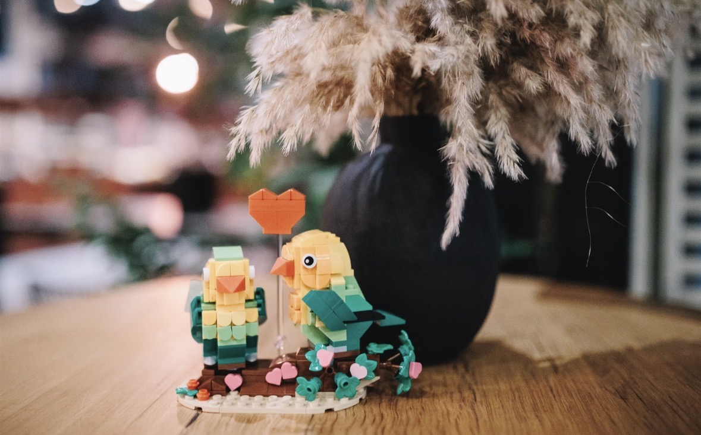

🧱 השכרת זרים וקישוטי לגו לחתונות
פרחים שנבנו
כדי לפרוח.
צבע וייחודיות לאירוע שלכם — עיצוב שמספר סיפור.
זרים וקישוטים מלבני לגו, בכל צבע וסגנון שתבחרו. מראה מרהיב במחיר נמוך משמעותית מפרחים אמיתיים.
- 💸 החל מ-₪600
- 🚚 שינוע כלול
- 🎨 עיצוב אישי



100%נבנה ביד 🧱